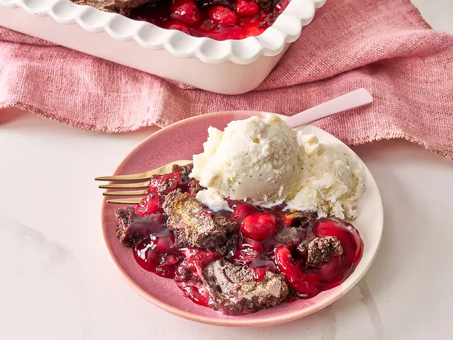

Home
3 Ingredient Chocolate Cherry Dump Cake

A Chocolatey Cherry Cake.
This 3-ingredient chocolate cherry dump cake could not be easier! Just pie filling, chocolate cake mix, and butter—you'll have it ready to bake before you can say, 'preheated oven'.
Ingredients.
- 2 (595 g each) cans cherry pie filling
- 1 (432 g) box chocolate cake mix
- 113 g butter
Steps.
- Preheat the oven to 190 degrees C. Pour pie filling into a 23 x 33 baking dish (or similar sized rectangular dish).
- Spread cake mix evenly over the pie filling, take care not to mix it into the fruit. Top evenly with butter slices.
- Bake in the preheated oven until lightly golden brown and bubbly, about 45 minutes. Let stand at least 5 minutes before serving.